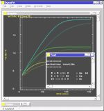
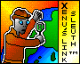

Miscellaneous
Software Tools
SeqVerter
SeqVerter is a sequence file format conversion utility by GeneStudio, Inc.

DynaFit
DynaFit - Perform nonlinear least-squares regression on chemical or enzymatic kinetic data.
PrestoPlot
PrestoPlot - 2D plotting tool.

Xenu's Link Sleuth (TM)
Xenu's Link Sleuth (TM) is a spidering software that checks Web sites for broken links. Link verification is done on "normal" links, images, frames, plug-ins, backgrounds, local image maps, style sheets, scripts and java applets. It displays a continously updated list of URLs which you can sort by different criteria. I use this program to verify if the links on Online Analysis Tools are working.
MAGIC Tool
MAGIC Tool (MicroArray Genome Imaging & Clustering Tool) - is a JAVA teaching resource developed at Davidson College (U.S.A.) by Laurie Heyer and her undergraduate students.
(Reference: L. J. Heyer et al. 2005. Bioinformatics 21: 2114 - 2115).
Updated: November, 2025